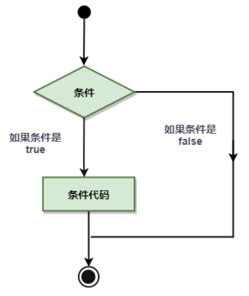
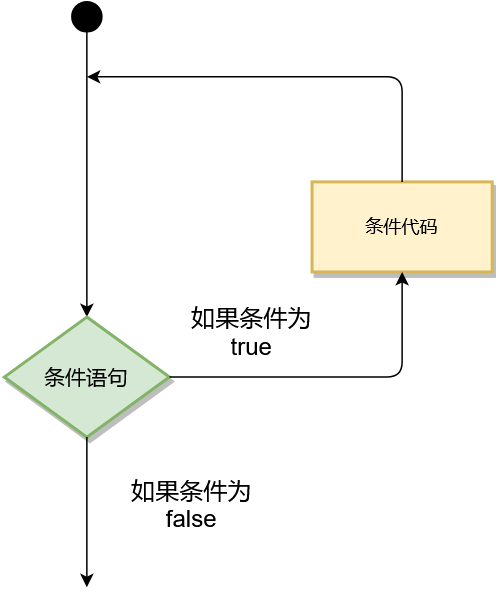
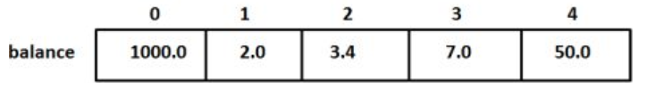
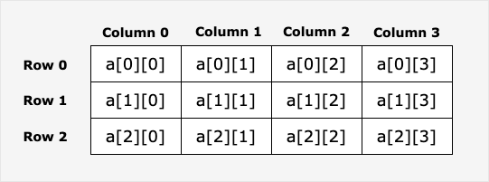

go的变量声明
- 第一种，指定变量类型，如果没有初始化，则变量默认为零值。
例如：
var a int // 声明一个整型变量 a，默认为 0
var b float64 // 声明一个浮点型变量 b，默认为 0.0
- 第二种，根据值自行判定变量类型。
例如：
var c = "Hello" // 声明变量 c，类型为 string
var d = 42 // 声明变量 d，类型为 int
- 第三种，如果变量已经使用 var 声明过了，再使用 := 声明变量，就产生编译错误
例如：
var e int = 10 // 使用 var 声明
// e := 20 // 编译错误：e 已经被声明过
go的语言常量
常量是一个简单值的标识符，在程序运行时，不会被修改的量。
常量中的数据类型只可以是布尔型、数字型（整数型、浮点型和复数）和字符串型。
常量的定义格式：
const identifier [type] = value
你可以省略类型说明符 [type]，因为编译器可以根据变量的值来推断其类型。
- 显式类型定义：
const b string = "abc" - 隐式类型定义：
const b = "abc"
多个相同类型的声明可以简写为：
const c_name1, c_name2 = value1, value2
iota，特殊常量，可以认为是一个可以被编译器修改的常量。
iota 在 const关键字出现时将被重置为 0(const 内部的第一行之前)，const 中每新增一行常量声明将使 iota 计数一次(iota 可理解为 const 语句块中的行索引)。
iota 可以被用作枚举值：
const (
a = iota
b = iota
c = iota
)
第一个 iota 等于 0，每当 iota 在新的一行被使用时，它的值都会自动加 1；所以 a=0, b=1, c=2 可以简写为如下形式：
const (
a = iota
b
c
)
iota 用法
实例
package main
import "fmt"
func main() {
const (
a = iota //0
b //1
c //2
d = "ha" //独立值，iota += 1
e //"ha" iota += 1
f = 100 //iota +=1
g //100 iota +=1
h = iota //7,恢复计数
i //8
)
fmt.Println(a,b,c,d,e,f,g,h,i)
}
以上实例运行结果为：
0 1 2 ha ha 100 100 7 8
go的运算符
运算符用于在程序运行时执行数学或逻辑运算。
Go 语言内置的运算符有：
- 算术运算符
- 关系运算符
- 逻辑运算符
- 位运算符
- 赋值运算符
- 其他运算符
接下来让我们来详细看看各个运算符的介绍。
算术运算符
下表列出了所有Go语言的算术运算符。假定 A 值为 10，B 值为 20。
| 运算符 | 描述 | 实例 |
|---|---|---|
| + | 相加 | A + B 输出结果 30 |
| - | 相减 | A - B 输出结果 -10 |
| * | 相乘 | A * B 输出结果 200 |
| / | 相除 | B / A 输出结果 2 |
| % | 求余 | B % A 输出结果 0 |
| ++ | 自增 | A++ 输出结果 11 |
| – | 自减 | A– 输出结果 9 |
以下实例演示了各个算术运算符的用法：
实例
package main
import "fmt"
func main() {
var a int = 21
var b int = 10
var c int
c = a + b
fmt.Printf("第一行 - c 的值为 %d**\n**", c )
c = a - b
fmt.Printf("第二行 - c 的值为 %d**\n**", c )
c = a * b
fmt.Printf("第三行 - c 的值为 %d**\n**", c )
c = a / b
fmt.Printf("第四行 - c 的值为 %d**\n**", c )
c = a % b
fmt.Printf("第五行 - c 的值为 %d**\n**", c )
a++
fmt.Printf("第六行 - a 的值为 %d**\n**", a )
a=21 // 为了方便测试，a 这里重新赋值为 21
a--
fmt.Printf("第七行 - a 的值为 %d**\n**", a )
}
以上实例运行结果：
第一行 - c 的值为 31
第二行 - c 的值为 11
第三行 - c 的值为 210
第四行 - c 的值为 2
第五行 - c 的值为 1
第六行 - a 的值为 22
第七行 - a 的值为 20
关系运算符
下表列出了所有Go语言的关系运算符。假定 A 值为 10，B 值为 20。
| 运算符 | 描述 | 实例 |
|---|---|---|
| == | 检查两个值是否相等，如果相等返回 True 否则返回 False。 | (A == B) 为 False |
| != | 检查两个值是否不相等，如果不相等返回 True 否则返回 False。 | (A != B) 为 True |
| > | 检查左边值是否大于右边值，如果是返回 True 否则返回 False。 | (A > B) 为 False |
| < | 检查左边值是否小于右边值，如果是返回 True 否则返回 False。 | (A < B) 为 True |
| >= | 检查左边值是否大于等于右边值，如果是返回 True 否则返回 False。 | (A >= B) 为 False |
| <= | 检查左边值是否小于等于右边值，如果是返回 True 否则返回 False。 | (A <= B) 为 True |
package main
import "fmt"
func main() {
var a bool = true
var b bool = false
if ( a && b ) {
fmt.Printf("第一行 - 条件为 true\n" )
}
if ( a || b ) {
fmt.Printf("第二行 - 条件为 true\n" )
}
/* 修改 a 和 b 的值 */
a = false
b = true
if ( a && b ) {
fmt.Printf("第三行 - 条件为 true\n" )
} else {
fmt.Printf("第三行 - 条件为 false\n" )
}
if ( !(a && b) ) {
fmt.Printf("第四行 - 条件为 true\n" )
}
}
运行结果：
第一行 - a 不等于 b
第二行 - a 不小于 b
第三行 - a 大于 b
第四行 - a 小于等于 b
第五行 - b 大于等于 a
逻辑运算符
下表列出了所有Go语言的逻辑运算符。假定 A 值为 True，B 值为 False。
| 运算符 | 描述 | 实例 |
|---|---|---|
| && | 逻辑 AND 运算符。 如果两边的操作数都是 True，则条件 True，否则为 False。 | (A && B) 为 False |
| || | 逻辑 OR 运算符。 如果两边的操作数有一个 True，则条件 True，否则为 False。 | (A || B) 为 True |
| ! | 逻辑 NOT 运算符。 如果条件为 True，则逻辑 NOT 条件 False，否则为 True。 | !(A && B) 为 True |
package main
import "fmt"
func main() {
var a bool = true
var b bool = false
if ( a && b ) {
fmt.Printf("第一行 - 条件为 true\n" )
}
if ( a || b ) {
fmt.Printf("第二行 - 条件为 true\n" )
}
/* 修改 a 和 b 的值 */
a = false
b = true
if ( a && b ) {
fmt.Printf("第三行 - 条件为 true\n" )
} else {
fmt.Printf("第三行 - 条件为 false\n" )
}
if ( !(a && b) ) {
fmt.Printf("第四行 - 条件为 true\n" )
}
}
运行结果：
第二行 - 条件为 true
第三行 - 条件为 false
第四行 - 条件为 true
位运算符
位运算符对整数在内存中的二进制位进行操作。
下表列出了位运算符 &, |, 和 ^ 的计算：
| p | q | p & q | p | q | p ^ q |
|---|---|---|---|---|
| 0 | 0 | 0 | 0 | 0 |
| 0 | 1 | 0 | 1 | 1 |
| 1 | 1 | 1 | 1 | 0 |
| 1 | 0 | 0 | 1 | 1 |
假定 A = 60; B = 13; 其二进制数转换为：
A = 0011 1100
B = 0000 1101
-----------------
A&B = 0000 1100
A|B = 0011 1101
A^B = 0011 0001
Go 语言支持的位运算符如下表所示。假定 A 为60，B 为13：
| 运算符 | 描述 | 实例 |
|---|---|---|
| & | 按位与运算符"&“是双目运算符。 其功能是参与运算的两数各对应的二进位相与。 | (A & B) 结果为 12, 二进制为 0000 1100 |
| | | 按位或运算符”|“是双目运算符。 其功能是参与运算的两数各对应的二进位相或 | (A | B) 结果为 61, 二进制为 0011 1101 |
| ^ | 按位异或运算符”^“是双目运算符。 其功能是参与运算的两数各对应的二进位相异或，当两对应的二进位相异时，结果为1。 | (A ^ B) 结果为 49, 二进制为 0011 0001 |
| « | 左移运算符”«“是双目运算符。左移n位就是乘以2的n次方。 其功能把”«“左边的运算数的各二进位全部左移若干位，由”«“右边的数指定移动的位数，高位丢弃，低位补0。 | A « 2 结果为 240 ，二进制为 1111 0000 |
| » | 右移运算符”»“是双目运算符。右移n位就是除以2的n次方。 其功能是把”»“左边的运算数的各二进位全部右移若干位，"»“右边的数指定移动的位数。 | A » 2 结果为 15 ，二进制为 0000 1111 |
package main
import "fmt"
func main() {
var a uint = 60 /* 60 = 0011 1100 */
var b uint = 13 /* 13 = 0000 1101 */
var c uint = 0
c = a & b /* 12 = 0000 1100 */
fmt.Printf("第一行 - c 的值为 %d\n", c )
c = a | b /* 61 = 0011 1101 */
fmt.Printf("第二行 - c 的值为 %d\n", c )
c = a ^ b /* 49 = 0011 0001 */
fmt.Printf("第三行 - c 的值为 %d\n", c )
c = a << 2 /* 240 = 1111 0000 */
fmt.Printf("第四行 - c 的值为 %d\n", c )
c = a >> 2 /* 15 = 0000 1111 */
fmt.Printf("第五行 - c 的值为 %d\n", c )
}
运行结果：
第一行 - c 的值为 12
第二行 - c 的值为 61
第三行 - c 的值为 49
第四行 - c 的值为 240
第五行 - c 的值为 15
赋值运算符
下表列出了所有Go语言的赋值运算符。
| 运算符 | 描述 | 实例 |
|---|---|---|
| = | 简单的赋值运算符，将一个表达式的值赋给一个左值 | C = A + B 将 A + B 表达式结果赋值给 C |
| += | 相加后再赋值 | C += A 等于 C = C + A |
| -= | 相减后再赋值 | C -= A 等于 C = C - A |
| *= | 相乘后再赋值 | C *= A 等于 C = C * A |
| /= | 相除后再赋值 | C /= A 等于 C = C / A |
| %= | 求余后再赋值 | C %= A 等于 C = C % A |
| «= | 左移后赋值 | C «= 2 等于 C = C « 2 |
| »= | 右移后赋值 | C »= 2 等于 C = C » 2 |
| &= | 按位与后赋值 | C &= 2 等于 C = C & 2 |
| ^= | 按位异或后赋值 | C ^= 2 等于 C = C ^ 2 |
| |= | 按位或后赋值 | C |= 2 等于 C = C | 2 |
package main
import "fmt"
func main() {
var a int = 21
var c int
c = a
fmt.Printf("第 1 行 - = 运算符实例，c 值为 = %d\n", c )
c += a
fmt.Printf("第 2 行 - += 运算符实例，c 值为 = %d\n", c )
c -= a
fmt.Printf("第 3 行 - -= 运算符实例，c 值为 = %d\n", c )
c *= a
fmt.Printf("第 4 行 - *= 运算符实例，c 值为 = %d\n", c )
c /= a
fmt.Printf("第 5 行 - /= 运算符实例，c 值为 = %d\n", c )
c = 200;
c <<= 2
fmt.Printf("第 6行 - <<= 运算符实例，c 值为 = %d\n", c )
c >>= 2
fmt.Printf("第 7 行 - >>= 运算符实例，c 值为 = %d\n", c )
c &= 2
fmt.Printf("第 8 行 - &= 运算符实例，c 值为 = %d\n", c )
c ^= 2
fmt.Printf("第 9 行 - ^= 运算符实例，c 值为 = %d\n", c )
c |= 2
fmt.Printf("第 10 行 - |= 运算符实例，c 值为 = %d\n", c )
}
运行结果：
第 1 行 - = 运算符实例，c 值为 = 21
第 2 行 - += 运算符实例，c 值为 = 42
第 3 行 - -= 运算符实例，c 值为 = 21
第 4 行 - *= 运算符实例，c 值为 = 441
第 5 行 - /= 运算符实例，c 值为 = 21
第 6行 - <<= 运算符实例，c 值为 = 800
第 7 行 - >>= 运算符实例，c 值为 = 200
第 8 行 - &= 运算符实例，c 值为 = 0
第 9 行 - ^= 运算符实例，c 值为 = 2
第 10 行 - |= 运算符实例，c 值为 = 2
其他运算符
下表列出了Go语言的其他运算符。
| 运算符 | 描述 | 实例 |
|---|---|---|
| & | 返回变量存储地址 | &a; 将给出变量的实际地址。 |
| * | 指针变量。 | *a; 是一个指针变量 |
package main
import "fmt"
func main() {
var a int = 4
var b int32
var c float32
var ptr *int
/* 运算符实例 */
fmt.Printf("第 1 行 - a 变量类型为 = %T\n", a );
fmt.Printf("第 2 行 - b 变量类型为 = %T\n", b );
fmt.Printf("第 3 行 - c 变量类型为 = %T\n", c );
/* & 和 * 运算符实例 */
ptr = &a /* 'ptr' 包含了 'a' 变量的地址 */
fmt.Printf("a 的值为 %d\n", a);
fmt.Printf("*ptr 为 %d\n", *ptr);
}
运行结果：
第 1 行 - a 变量类型为 = int
第 2 行 - b 变量类型为 = int32
第 3 行 - c 变量类型为 = float32
a 的值为 4
*ptr 为 4
运算符优先级
有些运算符拥有较高的优先级，二元运算符的运算方向均是从左至右。下表列出了所有运算符以及它们的优先级，由上至下代表优先级由高到低：
| 优先级 | 运算符 |
|---|---|
| 5 | * / % « » & &^ |
| 4 | + - | ^ |
| 3 | == != < <= > >= |
| 2 | && |
| 1 | || |
当然，你可以通过使用括号来临时提升某个表达式的整体运算优先级。
package main
import "fmt"
func main() {
var a int = 20
var b int = 10
var c int = 15
var d int = 5
var e int;
e = (a + b) * c / d; // ( 30 * 15 ) / 5
fmt.Printf("(a + b) * c / d 的值为 : %d\n", e );
e = ((a + b) * c) / d; // (30 * 15 ) / 5
fmt.Printf("((a + b) * c) / d 的值为 : %d\n" , e );
e = (a + b) * (c / d); // (30) * (15/5)
fmt.Printf("(a + b) * (c / d) 的值为 : %d\n", e );
e = a + (b * c) / d; // 20 + (150/5)
fmt.Printf("a + (b * c) / d 的值为 : %d\n" , e );
}
运行结果：
(a + b) * c / d 的值为 : 90
((a + b) * c) / d 的值为 : 90
(a + b) * (c / d) 的值为 : 90
a + (b * c) / d 的值为 : 50
补充
Go 的自增，自减只能作为表达式使用，而不能用于赋值语句。
a++ // 这是允许的，类似 a = a + 1,结果与 a++ 相同
a-- //与 a++ 相似
a = a++ // 这是不允许的，会出现编译错误 syntax error: unexpected ++ at end of statement
go的条件语句
条件语句需要开发者通过指定一个或多个条件，并通过测试条件是否为 true 来决定是否执行指定语句，并在条件为 false 的情况在执行另外的语句。

Go 语言提供了以下几种条件判断语句：
| 语句 | 描述 |
|---|---|
| if 语句 | if 语句 由一个布尔表达式后紧跟一个或多个语句组成。 |
| if…else 语句 | if 语句 后可以使用可选的 else 语句, else 语句中的表达式在布尔表达式为 false 时执行。 |
| if 嵌套语句 | 你可以在 if 或 else if 语句中嵌入一个或多个 if 或 else if 语句。 |
| switch 语句 | switch 语句用于基于不同条件执行不同动作。 |
| select 语句 | select 语句类似于 switch 语句，但是select会随机执行一个可运行的case。如果没有case可运行，它将阻塞，直到有case可运行。 |
go的循环语句

Go 语言提供了以下几种类型循环处理语句：
| 循环类型 | 描述 |
|---|---|
| for 循环 | 重复执行语句块 |
| 循环嵌套 | 在 for 循环中嵌套一个或多个 for 循环 |
循环控制语句
循环控制语句可以控制循环体内语句的执行过程。
GO 语言支持以下几种循环控制语句：
| 控制语句 | 描述 |
|---|---|
| break 语句 | 经常用于中断当前 for 循环或跳出 switch 语句 |
| continue 语句 | 跳过当前循环的剩余语句，然后继续进行下一轮循环。 |
| goto 语句 | 将控制转移到被标记的语句。 |
无限循环
如果循环中条件语句永远不为 false 则会进行无限循环，我们可以通过 for 循环语句中只设置一个条件表达式来执行无限循环：
package main
import "fmt"
func main() {
for true {
fmt.Printf("这是无限循环。\n");
}
}
Go 语言函数
- 函数是基本的代码块，用于执行一个任务。
- Go 语言最少有个 main() 函数。
- 你可以通过函数来划分不同功能，逻辑上每个函数执行的是指定的任务。
- 函数声明告诉了编译器函数的名称，返回类型，和参数。
- Go 语言标准库提供了多种可动用的内置的函数。例如，len() 函数可以接受不同类型参数并返回该类型的长度。如果我们传入的是字符串则返回字符串的长度，如果传入的是数组，则返回数组中包含的元素个数。
Go 语言函数定义格式如下：
func function_name( [parameter list] ) [return_types] {
//函数体
}
函数定义解析：
- func：函数由 func 开始声明
- function_name：函数名称，参数列表和返回值类型构成了函数签名。
- parameter list：参数列表，参数就像一个占位符，当函数被调用时，你可以将值传递给参数，这个值被称为实际参数。参数列表指定的是参数类型、顺序、及参数个数。参数是可选的，也就是说函数也可以不包含参数。
- return_types：返回类型，函数返回一列值。return_types 是该列值的数据类型。有些功能不需要返回值，这种情况下 return_types 不是必须的。
- 函数体：函数定义的代码集合。
实例
以下实例为 max() 函数的代码，该函数传入两个整型参数 num1 和 num2，并返回这两个参数的最大值：
/* 函数返回两个数的最大值 */
func max(num1, num2 int) int {
/* 声明局部变量 */
var result int
if (num1 > num2) {
result = num1
} else {
result = num2
}
return result
}
函数调用
当创建函数时，你定义了函数需要做什么，通过调用该函数来执行指定任务。
调用函数，向函数传递参数，并返回值，例如：
package main
import "fmt"
func main() {
/* 定义局部变量 */
var a int = 100
var b int = 200
var ret int
/* 调用函数并返回最大值 */
ret = max(a, b)
fmt.Printf( "最大值是 : %d\n", ret )
}
/* 函数返回两个数的最大值 */
func max(num1, num2 int) int {
/* 定义局部变量 */
var result int
if (num1 > num2) {
result = num1
} else {
result = num2
}
return result
}
以上实例在 main() 函数中调用 max（）函数，执行结果为：
最大值是 : 200
函数返回多个值
Go 函数可以返回多个值，例如：
实例
package main
import "fmt"
func swap(x, y string) (string, string) {
return y, x
}
func main() {
a, b := swap("Google", "Runoob")
fmt.Println(a, b)
}
以上实例执行结果为：
Runoob Google
函数参数
函数如果使用参数，该变量可称为函数的形参。
形参就像定义在函数体内的局部变量。
调用函数，可以通过两种方式来传递参数：
| 传递类型 | 描述 |
|---|---|
| 值传递 | 值传递是指在调用函数时将实际参数复制一份传递到函数中，这样在函数中如果对参数进行修改，将不会影响到实际参数。 |
| 引用传递 | 引用传递是指在调用函数时将实际参数的地址传递到函数中，那么在函数中对参数所进行的修改，将影响到实际参数。 |
默认情况下，Go 语言使用的是值传递，即在调用过程中不会影响到实际参数。
函数用法
| 函数用法 | 描述 |
|---|---|
| 函数作为另外一个函数的实参 | 函数定义后可作为另外一个函数的实参数传入 |
| 闭包 | 闭包是匿名函数，可在动态编程中使用 |
| 方法 | 方法就是一个包含了接受者的函数 |
Go 语言变量作用域
作用域为已声明标识符所表示的常量、类型、变量、函数或包在源代码中的作用范围。
Go 语言中变量可以在三个地方声明：
- 函数内定义的变量称为局部变量
- 函数外定义的变量称为全局变量
- 函数定义中的变量称为形式参数
局部变量
在函数体内声明的变量称之为局部变量，它们的作用域只在函数体内，参数和返回值变量也是局部变量。
以下实例中 main() 函数使用了局部变量 a, b, c：
package main
import "fmt"
func main() {
/* 声明局部变量 */
var a, b, c int
/* 初始化参数 */
a = 10
b = 20
c = a + b
fmt.Printf ("结果： a = %d, b = %d and c = %d\n", a, b, c)
}
以上实例执行输出结果为：
结果： a = 10, b = 20 and c = 30
全局变量
在函数体外声明的变量称之为全局变量，全局变量可以在整个包甚至外部包（被导出后）使用。
全局变量可以在任何函数中使用，以下实例演示了如何使用全局变量：
package main
import "fmt"
/* 声明全局变量 */
var g int
func main() {
/* 声明局部变量 */
var a, b int
/* 初始化参数 */
a = 10
b = 20
g = a + b
fmt.Printf("结果： a = %d, b = %d and g = %d\n", a, b, g)
}
以上实例执行输出结果为：
结果： a = 10, b = 20 and g = 30
Go 语言程序中全局变量与局部变量名称可以相同，但是函数内的局部变量会被优先考虑。实例如下：
package main
import "fmt"
/* 声明全局变量 */
var g int = 20
func main() {
/* 声明局部变量 */
var g int = 10
fmt.Printf ("结果： g = %d\n", g)
}
以上实例执行输出结果为：
结果： g = 10
形式参数
形式参数会作为函数的局部变量来使用。实例如下：
package main
import "fmt"
/* 声明全局变量 */
var a int = 20;
func main() {
/* main 函数中声明局部变量 */
var a int = 10
var b int = 20
var c int = 0
fmt.Printf("main()函数中 a = %d\n", a);
c = sum( a, b);
fmt.Printf("main()函数中 c = %d\n", c);
}
/* 函数定义-两数相加 */
func sum(a, b int) int {
fmt.Printf("sum() 函数中 a = %d\n", a);
fmt.Printf("sum() 函数中 b = %d\n", b);
return a + b;
}
以上实例执行输出结果为：
main()函数中 a = 10
sum() 函数中 a = 10
sum() 函数中 b = 20
main()函数中 c = 30
初始化局部和全局变量
不同类型的局部和全局变量默认值为：
| 数据类型 | 初始化默认值 |
|---|---|
| int | 0 |
| float32 | 0 |
| pointer | nil |
Go 语言数组
Go 语言提供了数组类型的数据结构。
数组是具有相同唯一类型的一组已编号且长度固定的数据项序列，这种类型可以是任意的原始类型例如整型、字符串或者自定义类型。
相对于去声明 number0, number1, …, number99 的变量，使用数组形式 numbers[0], numbers[1] …, numbers[99] 更加方便且易于扩展。
数组元素可以通过索引（位置）来读取（或者修改），索引从 0 开始，第一个元素索引为 0，第二个索引为 1，以此类推。
声明数组
Go 语言数组声明需要指定元素类型及元素个数，语法格式如下：
var arrayName [size]dataType
其中，arrayName 是数组的名称，size 是数组的大小，dataType 是数组中元素的数据类型。
以下定义了数组 balance 长度为 10 类型为 float32：
var balance [10]float32
初始化数组
以下演示了数组初始化：
以下实例声明一个名为 numbers 的整数数组，其大小为 5，在声明时，数组中的每个元素都会根据其数据类型进行默认初始化，对于整数类型，初始值为 0。
var numbers [5]int
还可以使用初始化列表来初始化数组的元素：
var numbers = [5]int{1, 2, 3, 4, 5}
以上代码声明一个大小为 5 的整数数组，并将其中的元素分别初始化为 1、2、3、4 和 5。
另外，还可以使用 := 简短声明语法来声明和初始化数组：
numbers := [5]int{1, 2, 3, 4, 5}
以上代码创建一个名为 numbers 的整数数组，并将其大小设置为 5，并初始化元素的值。
**注意：**在 Go 语言中，数组的大小是类型的一部分，因此不同大小的数组是不兼容的，也就是说 [5]int 和 [10]int 是不同的类型。
以下定义了数组 balance 长度为 5 类型为 float32，并初始化数组的元素：
var balance = [5]float32{1000.0, 2.0, 3.4, 7.0, 50.0}
我们也可以通过字面量在声明数组的同时快速初始化数组：
balance := [5]float32{1000.0, 2.0, 3.4, 7.0, 50.0}
如果数组长度不确定，可以使用 … 代替数组的长度，编译器会根据元素个数自行推断数组的长度：
var balance = [...]float32{1000.0, 2.0, 3.4, 7.0, 50.0}
或
balance := [...]float32{1000.0, 2.0, 3.4, 7.0, 50.0}
如果设置了数组的长度，我们还可以通过指定下标来初始化元素：
// 将索引为 1 和 3 的元素初始化
balance := [5]float32{1:2.0,3:7.0}
初始化数组中 {} 中的元素个数不能大于 [] 中的数字。
如果忽略 [] 中的数字不设置数组大小，Go 语言会根据元素的个数来设置数组的大小：
balance[4] = 50.0
以上实例读取了第五个元素。数组元素可以通过索引（位置）来读取（或者修改），索引从 0 开始，第一个元素索引为 0，第二个索引为 1，以此类推。

访问数组元素
数组元素可以通过索引（位置）来读取。格式为数组名后加中括号，中括号中为索引的值。例如：
var salary float32 = balance[9]
以上实例读取了数组 balance 第 10 个元素的值。
以下演示了数组完整操作（声明、赋值、访问）的实例：
package main
import "fmt"
func main() {
var n [10]int /* n 是一个长度为 10 的数组 */
var i,j int
/* 为数组 n 初始化元素 */
for i = 0; i < 10; i++ {
n[i] = i + 100 /* 设置元素为 i + 100 */
}
/* 输出每个数组元素的值 */
for j = 0; j < 10; j++ {
fmt.Printf("Element[%d] = %d\n", j, n[j] )
}
}
结果如下：
Element[0] = 100
Element[1] = 101
Element[2] = 102
Element[3] = 103
Element[4] = 104
Element[5] = 105
Element[6] = 106
Element[7] = 107
Element[8] = 108
Element[9] = 109
package main
import "fmt"
func main() {
var i,j,k int
// 声明数组的同时快速初始化数组
balance := [5]float32{1000.0, 2.0, 3.4, 7.0, 50.0}
/* 输出数组元素 */ ...
for i = 0; i < 5; i++ {
fmt.Printf("balance[%d] = %f\n", i, balance[i] )
}
balance2 := [...]float32{1000.0, 2.0, 3.4, 7.0, 50.0}
/* 输出每个数组元素的值 */
for j = 0; j < 5; j++ {
fmt.Printf("balance2[%d] = %f\n", j, balance2[j] )
}
// 将索引为 1 和 3 的元素初始化
balance3 := [5]float32{1:2.0,3:7.0}
for k = 0; k < 5; k++ {
fmt.Printf("balance3[%d] = %f\n", k, balance3[k] )
}
}
结果如下：
balance[0] = 1000.000000
balance[1] = 2.000000
balance[2] = 3.400000
balance[3] = 7.000000
balance[4] = 50.000000
balance2[0] = 1000.000000
balance2[1] = 2.000000
balance2[2] = 3.400000
balance2[3] = 7.000000
balance2[4] = 50.000000
balance3[0] = 0.000000
balance3[1] = 2.000000
balance3[2] = 0.000000
balance3[3] = 7.000000
balance3[4] = 0.000000
多维数组
Go 语言支持多维数组，以下为常用的多维数组声明方式：
var variable_name [SIZE1][SIZE2]...[SIZEN] variable_type
以下实例声明了三维的整型数组：
var threedim [5][10][4]int
二维数组
二维数组是最简单的多维数组，二维数组本质上是由一维数组组成的。二维数组定义方式如下：
var arrayName [ x ][ y ] variable_type
variable_type 为 Go 语言的数据类型，arrayName 为数组名，二维数组可认为是一个表格，x 为行，y 为列，下图演示了一个二维数组 a 为三行四列：

二维数组中的元素可通过 a[ i ][ j ]来访问。
package main
import "fmt"
func main() {
// Step 1: 创建数组
values := [][]int{}
// Step 2: 使用 append() 函数向空的二维数组添加两行一维数组
row1 := []int{1, 2, 3}
row2 := []int{4, 5, 6}
values = append(values, row1)
values = append(values, row2)
// Step 3: 显示两行数据
fmt.Println("Row 1")
fmt.Println(values[0])
fmt.Println("Row 2")
fmt.Println(values[1])
// Step 4: 访问第一个元素
fmt.Println("第一个元素为：")
fmt.Println(values[0][0])
}
结果为：
Row 1
[1 2 3]
Row 2
[4 5 6]
第一个元素为：
1
初始化二维数组
多维数组可通过大括号来初始值。以下实例为一个 3 行 4 列的二维数组：
a := [3][4]int{
{0, 1, 2, 3} , /* 第一行索引为 0 */
{4, 5, 6, 7} , /* 第二行索引为 1 */
{8, 9, 10, 11}, /* 第三行索引为 2 */
}
**注意：**以上代码中倒数第二行的}必须要有逗号，因为最后一行的} 不能单独一行，也可以写成这样：
a := [3][4]int{
{0, 1, 2, 3} , /* 第一行索引为 0 */
{4, 5, 6, 7} , /* 第二行索引为 1 */
{8, 9, 10, 11}} /* 第三行索引为 2 */
以下实例初始化一个 2 行 2 列 的二维数组：
package main
import "fmt"
func main() {
// 创建二维数组
sites := [2][2]string{}
// 向二维数组添加元素
sites[0][0] = "Google"
sites[0][1] = "Runoob"
sites[1][0] = "Taobao"
sites[1][1] = "Weibo"
// 显示结果
fmt.Println(sites)
}
输出结果为：
[[Google Runoob] [Taobao Weibo]]
访问二维数组
二维数组通过指定坐标来访问。如数组中的行索引与列索引，例如：
val := a[2][3]
或
var value int = a[2][3]
以上实例访问了二维数组 val 第三行的第四个元素。
二维数组可以使用循环嵌套来输出元素：
package main
import "fmt"
func main() {
/* 数组 - 5 行 2 列*/
var a = [5][2]int{ {0,0}, {1,2}, {2,4}, {3,6},{4,8}}
var i, j int
/* 输出数组元素 */
for i = 0; i < 5; i++ {
for j = 0; j < 2; j++ {
fmt.Printf("a[%d][%d] = %d\n", i,j, a[i][j] )
}
}
}
输出结果为：
a[0][0] = 0
a[0][1] = 0
a[1][0] = 1
a[1][1] = 2
a[2][0] = 2
a[2][1] = 4
a[3][0] = 3
a[3][1] = 6
a[4][0] = 4
a[4][1] = 8
以下实例创建各个维度元素数量不一致的多维数组：
package main
import "fmt"
func main() {
// 创建空的二维数组
animals := [][]string{}
// 创建三一维数组，各数组长度不同
row1 := []string{"fish", "shark", "eel"}
row2 := []string{"bird"}
row3 := []string{"lizard", "salamander"}
// 使用 append() 函数将一维数组添加到二维数组中
animals = append(animals, row1)
animals = append(animals, row2)
animals = append(animals, row3)
// 循环输出
for i := range animals {
fmt.Printf("Row: %v\n", i)
fmt.Println(animals[i])
}
}
输出结果为：
Row: 0
[fish shark eel]
Row: 1
[bird]
Row: 2
[lizard salamander]
Go 语言向函数传递数组
Go 语言中的数组是值类型，因此在将数组传递给函数时，实际上是传递数组的副本。
如果你想向函数传递数组参数，你需要在函数定义时，声明形参为数组，我们可以通过以下两种方式来声明：
方式一
形参设定数组大小：
func myFunction(param [10]int) {
....
}
方式二
形参未设定数组大小：
func myFunction(param []int) {
....
}
如果你想要在函数内修改原始数组，可以通过传递数组的指针来实现。
实例
让我们看下以下实例，实例中函数接收整型数组参数，另一个参数指定了数组元素的个数，并返回平均值：
func getAverage(arr []int, size int) float32
{
var i int
var avg, sum float32
for i = 0; i < size; ++i {
sum += arr[i]
}
avg = sum / size
return avg;
}
接下来我们来调用这个函数：
package main
import "fmt"
func main() {
/* 数组长度为 5 */
var balance = [5]int {1000, 2, 3, 17, 50}
var avg float32
/* 数组作为参数传递给函数 */
avg = getAverage( balance, 5 ) ;
/* 输出返回的平均值 */
fmt.Printf( "平均值为: %f ", avg );
}
func getAverage(arr [5]int, size int) float32 {
var i,sum int
var avg float32
for i = 0; i < size;i++ {
sum += arr[i]
}
avg = float32(sum) / float32(size)
return avg;
}
输出结果为：
平均值为: 214.399994
以上实例中我们使用的形参并未设定数组大小。
浮点数计算输出有一定的偏差，你也可以转整型来设置精度。
package main
import (
"fmt"
)
func main() {
a := 1.69
b := 1.7
c := a * b // 结果应该是2.873
fmt.Println(c) // 输出的是2.8729999999999998
}
设置固定精度：
package main
import (
"fmt"
)
func main() {
a := 1690 // 表示1.69
b := 1700 // 表示1.70
c := a * b // 结果应该是2873000表示 2.873
fmt.Println(c) // 内部编码
fmt.Println(float64(c) / 1000000) // 显示
}
如果你想要在函数内修改原始数组，可以通过传递数组的指针来实现。
以下实例演示如何向函数传递数组，函数接受一个数组和数组的指针作为参数：
package main
import "fmt"
// 函数接受一个数组作为参数
func modifyArray(arr [5]int) {
for i := 0; i < len(arr); i++ {
arr[i] = arr[i] * 2
}
}
// 函数接受一个数组的指针作为参数
func modifyArrayWithPointer(arr *[5]int) {
for i := 0; i < len(*arr); i++ {
(*arr)[i] = (*arr)[i] * 2
}
}
func main() {
// 创建一个包含5个元素的整数数组
myArray := [5]int{1, 2, 3, 4, 5}
fmt.Println("Original Array:", myArray)
// 传递数组给函数，但不会修改原始数组的值
modifyArray(myArray)
fmt.Println("Array after modifyArray:", myArray)
// 传递数组的指针给函数，可以修改原始数组的值
modifyArrayWithPointer(&myArray)
fmt.Println("Array after modifyArrayWithPointer:", myArray)
}
在上面的例子中，modifyArray 函数接受一个数组，并尝试修改数组的值，但在主函数中调用后，原始数组并未被修改。相反，modifyArrayWithPointer 函数接受一个数组的指针，并通过指针修改了原始数组的值。
以上实例执行输出结果为：
Original Array: [1 2 3 4 5]
Array after modifyArray: [1 2 3 4 5]
Array after modifyArrayWithPointer: [2 4 6 8 10]
Go 语言指针
Go 语言中指针是很容易学习的，Go 语言中使用指针可以更简单的执行一些任务。
接下来让我们来一步步学习 Go 语言指针。
我们都知道，变量是一种使用方便的占位符，用于引用计算机内存地址。
Go 语言的取地址符是 &，放到一个变量前使用就会返回相应变量的内存地址。
以下实例演示了变量在内存中地址：
package main
import "fmt"
func main() {
var a int = 10
fmt.Printf("变量的地址: %x\n", &a )
}
输出结果为：
变量的地址: 20818a220
什么是指针
一个指针变量指向了一个值的内存地址。
类似于变量和常量，在使用指针前你需要声明指针。指针声明格式如下：
var var_name *var-type
var-type 为指针类型，var_name 为指针变量名，* 号用于指定变量是作为一个指针。以下是有效的指针声明：
var ip *int /* 指向整型*/
var fp *float32 /* 指向浮点型 */
如何使用指针
指针使用流程：
- 定义指针变量。
- 为指针变量赋值。
- 访问指针变量中指向地址的值。
在指针类型前面加上 * 号（前缀）来获取指针所指向的内容。
package main
import "fmt"
func main() {
var a int= 20 /* 声明实际变量 */
var ip *int /* 声明指针变量 */
ip = &a /* 指针变量的存储地址 */
fmt.Printf("a 变量的地址是: %x\n", &a )
/* 指针变量的存储地址 */
fmt.Printf("ip 变量储存的指针地址: %x\n", ip )
/* 使用指针访问值 */
fmt.Printf("*ip 变量的值: %d\n", *ip )
}
输出结果为：
a 变量的地址是: 20818a220
ip 变量储存的指针地址: 20818a220
*ip 变量的值: 20
Go 空指针
当一个指针被定义后没有分配到任何变量时，它的值为 nil。
nil 指针也称为空指针。
nil在概念上和其它语言的null、None、nil、NULL一样，都指代零值或空值。
一个指针变量通常缩写为 ptr。
package main
import "fmt"
func main() {
var ptr *int
fmt.Printf("ptr 的值为 : %x\n", ptr )
}
输出结果为：
ptr 的值为 : 0
空指针判断：
if(ptr != nil) /* ptr 不是空指针 */
if(ptr == nil) /* ptr 是空指针 */
Go 语言指针数组
package main
import "fmt"
const MAX int = 3
func main() {
a := []int{10,100,200}
var i int
for i = 0; i < MAX; i++ {
fmt.Printf("a[%d] = %d\n", i, a[i] )
}
}
以上代码执行输出结果为：
a[0] = 10
a[1] = 100
a[2] = 200
有一种情况，我们可能需要保存数组，这样我们就需要使用到指针。
以下声明了整型指针数组：
var ptr [MAX]*int;
ptr 为整型指针数组。因此每个元素都指向了一个值。以下实例的三个整数将存储在指针数组中：
package main
import "fmt"
const MAX int = 3
func main() {
a := []int{10,100,200}
var i int
var ptr [MAX]*int;
for i = 0; i < MAX; i++ {
ptr[i] = &a[i] /* 整数地址赋值给指针数组 */
}
for i = 0; i < MAX; i++ {
fmt.Printf("a[%d] = %d\n", i,*ptr[i] )
}
}
输出结果为：
a[0] = 10
a[1] = 100
a[2] = 200
Go 语言指针作为函数参数
Go 语言允许向函数传递指针，只需要在函数定义的参数上设置为指针类型即可。
以下实例演示了如何向函数传递指针，并在函数调用后修改函数内的值，：
package main
import "fmt"
func main() {
/* 定义局部变量 */
var a int = 100
var b int= 200
fmt.Printf("交换前 a 的值 : %d\n", a )
fmt.Printf("交换前 b 的值 : %d\n", b )
/* 调用函数用于交换值
* &a 指向 a 变量的地址
* &b 指向 b 变量的地址
*/
swap(&a, &b);
fmt.Printf("交换后 a 的值 : %d\n", a )
fmt.Printf("交换后 b 的值 : %d\n", b )
}
func swap(x *int, y *int) {
var temp int
temp = *x /* 保存 x 地址的值 */
*x = *y /* 将 y 赋值给 x */
*y = temp /* 将 temp 赋值给 y */
}
输出结果为：
交换前 a 的值 : 100
交换前 b 的值 : 200
交换后 a 的值 : 200
交换后 b 的值 : 100
Go 语言指向指针的指针
如果一个指针变量存放的又是另一个指针变量的地址，则称这个指针变量为指向指针的指针变量。
当定义一个指向指针的指针变量时，第一个指针存放第二个指针的地址，第二个指针存放变量的地址：

指向指针的指针变量声明格式如下：
var ptr **int;
以上指向指针的指针变量为整型。
访问指向指针的指针变量值需要使用两个 * 号，如下所示：
package main
import "fmt"
func main() {
var a int
var ptr *int
var pptr **int
a = 3000
/* 指针 ptr 地址 */
ptr = &a
/* 指向指针 ptr 地址 */
pptr = &ptr
/* 获取 pptr 的值 */
fmt.Printf("变量 a = %d\n", a )
fmt.Printf("指针变量 *ptr = %d\n", *ptr )
fmt.Printf("指向指针的指针变量 **pptr = %d\n", **pptr)
}
输出结果为：
变量 a = 3000
指针变量 *ptr = 3000
指向指针的指针变量 **pptr = 3000
Go 语言结构体
Go 语言中数组可以存储同一类型的数据，但在结构体中我们可以为不同项定义不同的数据类型。
结构体是由一系列具有相同类型或不同类型的数据构成的数据集合。
结构体表示一项记录，比如保存图书馆的书籍记录，每本书有以下属性：
- Title ：标题
- Author ： 作者
- Subject：学科
- ID：书籍ID
定义结构体
结构体定义需要使用 type 和 struct 语句。struct 语句定义一个新的数据类型，结构体中有一个或多个成员。type 语句设定了结构体的名称。结构体的格式如下：
type struct_variable_type struct {
member definition
member definition
...
member definition
}
一旦定义了结构体类型，它就能用于变量的声明，语法格式如下：
variable_name := structure_variable_type {value1, value2...valuen}
或
variable_name := structure_variable_type { key1: value1, key2: value2..., keyn: valuen}
package main
import "fmt"
type Books struct {
title string
author string
subject string
book_id int
}
func main() {
// 创建一个新的结构体
fmt.Println(Books{"Go 语言", "www.runoob.com", "Go 语言教程", 6495407})
// 也可以使用 key => value 格式
fmt.Println(Books{title: "Go 语言", author: "www.runoob.com", subject: "Go 语言教程", book_id: 6495407})
// 忽略的字段为 0 或 空
fmt.Println(Books{title: "Go 语言", author: "www.runoob.com"})
}
输出结果为：
{Go 语言 www.runoob.com Go 语言教程 6495407}
{Go 语言 www.runoob.com Go 语言教程 6495407}
{Go 语言 www.runoob.com 0}
访问结构体成员
如果要访问结构体成员，需要使用点号 . 操作符，格式为：
结构体.成员名
结构体类型变量使用 struct 关键字定义，实例如下：
package main
import "fmt"
type Books struct {
title string
author string
subject string
book_id int
}
func main() {
var Book1 Books /* 声明 Book1 为 Books 类型 */
var Book2 Books /* 声明 Book2 为 Books 类型 */
/* book 1 描述 */
Book1.title = "Go 语言"
Book1.author = "www.runoob.com"
Book1.subject = "Go 语言教程"
Book1.book_id = 6495407
/* book 2 描述 */
Book2.title = "Python 教程"
Book2.author = "www.runoob.com"
Book2.subject = "Python 语言教程"
Book2.book_id = 6495700
/* 打印 Book1 信息 */
fmt.Printf( "Book 1 title : %s\n", Book1.title)
fmt.Printf( "Book 1 author : %s\n", Book1.author)
fmt.Printf( "Book 1 subject : %s\n", Book1.subject)
fmt.Printf( "Book 1 book_id : %d\n", Book1.book_id)
/* 打印 Book2 信息 */
fmt.Printf( "Book 2 title : %s\n", Book2.title)
fmt.Printf( "Book 2 author : %s\n", Book2.author)
fmt.Printf( "Book 2 subject : %s\n", Book2.subject)
fmt.Printf( "Book 2 book_id : %d\n", Book2.book_id)
}
运行结果为：
Book 1 title : Go 语言
Book 1 author : www.runoob.com
Book 1 subject : Go 语言教程
Book 1 book_id : 6495407
Book 2 title : Python 教程
Book 2 author : www.runoob.com
Book 2 subject : Python 语言教程
Book 2 book_id : 6495700
结构体作为函数参数
你可以像其他数据类型一样将结构体类型作为参数传递给函数。并以以上实例的方式访问结构体变量：
package main
import "fmt"
type Books struct {
title string
author string
subject string
book_id int
}
func main() {
var Book1 Books /* 声明 Book1 为 Books 类型 */
var Book2 Books /* 声明 Book2 为 Books 类型 */
/* book 1 描述 */
Book1.title = "Go 语言"
Book1.author = "www.runoob.com"
Book1.subject = "Go 语言教程"
Book1.book_id = 6495407
/* book 2 描述 */
Book2.title = "Python 教程"
Book2.author = "www.runoob.com"
Book2.subject = "Python 语言教程"
Book2.book_id = 6495700
/* 打印 Book1 信息 */
printBook(Book1)
/* 打印 Book2 信息 */
printBook(Book2)
}
func printBook( book Books ) {
fmt.Printf( "Book title : %s\n", book.title)
fmt.Printf( "Book author : %s\n", book.author)
fmt.Printf( "Book subject : %s\n", book.subject)
fmt.Printf( "Book book_id : %d\n", book.book_id)
}
运行结果为：
Book title : Go 语言
Book author : www.runoob.com
Book subject : Go 语言教程
Book book_id : 6495407
Book title : Python 教程
Book author : www.runoob.com
Book subject : Python 语言教程
Book book_id : 6495700
结构体指针
你可以定义指向结构体的指针类似于其他指针变量，格式如下：
var struct_pointer *Books
以上定义的指针变量可以存储结构体变量的地址。查看结构体变量地址，可以将 & 符号放置于结构体变量前：
struct_pointer = &Book1
使用结构体指针访问结构体成员，使用 “.” 操作符：
struct_pointer.title
package main
import "fmt"
type Books struct {
title string
author string
subject string
book_id int
}
func main() {
var Book1 Books /* 声明 Book1 为 Books 类型 */
var Book2 Books /* 声明 Book2 为 Books 类型 */
/* book 1 描述 */
Book1.title = "Go 语言"
Book1.author = "www.runoob.com"
Book1.subject = "Go 语言教程"
Book1.book_id = 6495407
/* book 2 描述 */
Book2.title = "Python 教程"
Book2.author = "www.runoob.com"
Book2.subject = "Python 语言教程"
Book2.book_id = 6495700
/* 打印 Book1 信息 */
printBook(&Book1)
/* 打印 Book2 信息 */
printBook(&Book2)
}
func printBook( book *Books ) {
fmt.Printf( "Book title : %s\n", book.title)
fmt.Printf( "Book author : %s\n", book.author)
fmt.Printf( "Book subject : %s\n", book.subject)
fmt.Printf( "Book book_id : %d\n", book.book_id)
}
运行结果为：
Book title : Go 语言
Book author : www.runoob.com
Book subject : Go 语言教程
Book book_id : 6495407
Book title : Python 教程
Book author : www.runoob.com
Book subject : Python 语言教程
Book book_id : 6495700
Go 语言切片(Slice)
Go 语言切片是对数组的抽象。
Go 数组的长度不可改变，在特定场景中这样的集合就不太适用，Go 中提供了一种灵活，功能强悍的内置类型切片(“动态数组”)，与数组相比切片的长度是不固定的，可以追加元素，在追加时可能使切片的容量增大。
定义切片
你可以声明一个未指定大小的数组来定义切片：
var identifier []type
切片不需要说明长度。
或使用 make() 函数来创建切片:
var slice1 []type = make([]type, len)
也可以简写为
slice1 := make([]type, len)
也可以指定容量，其中 capacity 为可选参数。
make([]T, length, capacity)
这里 len 是数组的长度并且也是切片的初始长度。
切片初始化
s :=[] int {1,2,3 }
直接初始化切片，[] 表示是切片类型，{1,2,3} 初始化值依次是 1,2,3，其 cap=len=3。
s := arr[:]
初始化切片 s，是数组 arr 的引用。
s := arr[startIndex:endIndex]
将 arr 中从下标 startIndex 到 endIndex-1 下的元素创建为一个新的切片。
s := arr[startIndex:]
默认 endIndex 时将表示一直到arr的最后一个元素。
s := arr[:endIndex]
默认 startIndex 时将表示从 arr 的第一个元素开始。
s1 := s[startIndex:endIndex]
通过切片 s 初始化切片 s1。
s :=make([]int,len,cap)
通过内置函数 make() 初始化切片s，[]int 标识为其元素类型为 int 的切片。
len() 和 cap() 函数
切片是可索引的，并且可以由 len() 方法获取长度。
切片提供了计算容量的方法 cap() 可以测量切片最长可以达到多少。
以下为具体实例：
package main
import "fmt"
func main() {
var numbers = make([]int,3,5)
printSlice(numbers)
}
func printSlice(x []int){
fmt.Printf("len=%d cap=%d slice=%v\n",len(x),cap(x),x)
}
输出结果为:
len=3 cap=5 slice=[0 0 0]
空(nil)切片
一个切片在未初始化之前默认为 nil，长度为 0，实例如下：
package main
import "fmt"
func main() {
var numbers []int
printSlice(numbers)
if(numbers == nil){
fmt.Printf("切片是空的")
}
}
func printSlice(x []int){
fmt.Printf("len=%d cap=%d slice=%v\n",len(x),cap(x),x)
}
输出结果为:
len=0 cap=0 slice=[]
切片是空的
切片截取
可以通过设置下限及上限来设置截取切片 [lower-bound:upper-bound]，实例如下：
package main
import "fmt"
func main() {
/* 创建切片 */
numbers := []int{0,1,2,3,4,5,6,7,8}
printSlice(numbers)
/* 打印原始切片 */
fmt.Println("numbers ==", numbers)
/* 打印子切片从索引1(包含) 到索引4(不包含)*/
fmt.Println("numbers[1:4] ==", numbers[1:4])
/* 默认下限为 0*/
fmt.Println("numbers[:3] ==", numbers[:3])
/* 默认上限为 len(s)*/
fmt.Println("numbers[4:] ==", numbers[4:])
numbers1 := make([]int,0,5)
printSlice(numbers1)
/* 打印子切片从索引 0(包含) 到索引 2(不包含) */
number2 := numbers[:2]
printSlice(number2)
/* 打印子切片从索引 2(包含) 到索引 5(不包含) */
number3 := numbers[2:5]
printSlice(number3)
}
func printSlice(x []int){
fmt.Printf("len=%d cap=%d slice=%v\n",len(x),cap(x),x)
}
输出结果为：
len=9 cap=9 slice=[0 1 2 3 4 5 6 7 8]
numbers == [0 1 2 3 4 5 6 7 8]
numbers[1:4] == [1 2 3]
numbers[:3] == [0 1 2]
numbers[4:] == [4 5 6 7 8]
len=0 cap=5 slice=[]
len=2 cap=9 slice=[0 1]
len=3 cap=7 slice=[2 3 4]
append() 和 copy() 函数
如果想增加切片的容量，我们必须创建一个新的更大的切片并把原分片的内容都拷贝过来。
下面的代码描述了从拷贝切片的 copy 方法和向切片追加新元素的 append 方法。
package main
import "fmt"
func main() {
var numbers []int
printSlice(numbers)
/* 允许追加空切片 */
numbers = append(numbers, 0)
printSlice(numbers)
/* 向切片添加一个元素 */
numbers = append(numbers, 1)
printSlice(numbers)
/* 同时添加多个元素 */
numbers = append(numbers, 2,3,4)
printSlice(numbers)
/* 创建切片 numbers1 是之前切片的两倍容量*/
numbers1 := make([]int, len(numbers), (cap(numbers))*2)
/* 拷贝 numbers 的内容到 numbers1 */
copy(numbers1,numbers)
printSlice(numbers1)
}
func printSlice(x []int){
fmt.Printf("len=%d cap=%d slice=%v\n",len(x),cap(x),x)
}
输出结果为：
len=0 cap=0 slice=[]
len=1 cap=1 slice=[0]
len=2 cap=2 slice=[0 1]
len=5 cap=6 slice=[0 1 2 3 4]
len=5 cap=12 slice=[0 1 2 3 4]
Go 语言范围(Range)
Go 语言中 range 关键字用于 for 循环中迭代数组(array)、切片(slice)、通道(channel)或集合(map)的元素。在数组和切片中它返回元素的索引和索引对应的值，在集合中返回 key-value 对。
for 循环的 range 格式可以对 slice、map、数组、字符串等进行迭代循环。格式如下：
for key, value := range oldMap {
newMap[key] = value
}
以上代码中的 key 和 value 是可以省略。
如果只想读取 key，格式如下：
for key := range oldMap
或者这样：
for key, _ := range oldMap
如果只想读取 value，格式如下：
for _, value := range oldMap
数组和切片
遍历简单的切片，2**%d 的结果为 2 对应的次方数：
package main
import "fmt"
// 声明一个包含 2 的幂次方的切片
var pow = []int{1, 2, 4, 8, 16, 32, 64, 128}
func main() {
// 遍历 pow 切片，i 是索引，v 是值
for i, v := range pow {
// 打印 2 的 i 次方等于 v
fmt.Printf("2**%d = %d\n", i, v)
}
}
遍历 pow 切片，i 是索引，v 是值
输出结果为：
2**0 = 1
2**1 = 2
2**2 = 4
2**3 = 8
2**4 = 16
2**5 = 32
2**6 = 64
2**7 = 128
字符串
range 迭代字符串时，返回每个字符的索引和 Unicode 代码点（rune）。
package main
import "fmt"
func main() {
for i, c := range "hello" {
fmt.Printf("index: %d, char: %c\n", i, c)
}
}
输出结果为:
index: 0, char: h
index: 1, char: e
index: 2, char: l
index: 3, char: l
index: 4, char: o
映射（Map）
for 循环的 range 格式可以省略 key 和 value，如下实例：
package main
import "fmt"
func main() {
// 创建一个空的 map，key 是 int 类型，value 是 float32 类型
map1 := make(map[int]float32)
// 向 map1 中添加 key-value 对
map1[1] = 1.0
map1[2] = 2.0
map1[3] = 3.0
map1[4] = 4.0
// 遍历 map1，读取 key 和 value
for key, value := range map1 {
// 打印 key 和 value
fmt.Printf("key is: %d - value is: %f\n", key, value)
}
// 遍历 map1，只读取 key
for key := range map1 {
// 打印 key
fmt.Printf("key is: %d\n", key)
}
// 遍历 map1，只读取 value
for _, value := range map1 {
// 打印 value
fmt.Printf("value is: %f\n", value)
}
}
输出结果为:
key is: 4 - value is: 4.000000
key is: 1 - value is: 1.000000
key is: 2 - value is: 2.000000
key is: 3 - value is: 3.000000
key is: 1
key is: 2
key is: 3
key is: 4
value is: 1.000000
value is: 2.000000
value is: 3.000000
value is: 4.000000
通道（Channel）
range 遍历从通道接收的值，直到通道关闭。
package main
import "fmt"
func main() {
ch := make(chan int, 2)
ch <- 1
ch <- 2
close(ch)
for v := range ch {
fmt.Println(v)
}
}
输出结果为:
1
2
忽略值
在遍历时可以使用 _ 来忽略索引或值。
package main
import "fmt"
func main() {
nums := []int{2, 3, 4}
// 忽略索引
for _, num := range nums {
fmt.Println("value:", num)
}
// 忽略值
for i := range nums {
fmt.Println("index:", i)
}
}
输出结果为:
value: 2
value: 3
value: 4
index: 0
index: 1
index: 2
其他
range 遍历其他数据结构：
package main
import "fmt"
func main() {
//这是我们使用 range 去求一个 slice 的和。使用数组跟这个很类似
nums := []int{2, 3, 4}
sum := 0
for _, num := range nums {
sum += num
}
fmt.Println("sum:", sum)
//在数组上使用 range 将传入索引和值两个变量。上面那个例子我们不需要使用该元素的序号，所以我们使用空白符"_"省略了。有时侯我们确实需要知道它的索引。
for i, num := range nums {
if num == 3 {
fmt.Println("index:", i)
}
}
//range 也可以用在 map 的键值对上。
kvs := map[string]string{"a": "apple", "b": "banana"}
for k, v := range kvs {
fmt.Printf("%s -> %s\n", k, v)
}
//range也可以用来枚举 Unicode 字符串。第一个参数是字符的索引，第二个是字符（Unicode的值）本身。
for i, c := range "go" {
fmt.Println(i, c)
}
}
输出结果为：
sum: 9
index: 1
a -> apple
b -> banana
0 103
1 111
Go 语言Map(集合)
Map 是一种无序的键值对的集合。
Map 最重要的一点是通过 key 来快速检索数据，key 类似于索引，指向数据的值。
Map 是一种集合，所以我们可以像迭代数组和切片那样迭代它。不过，Map 是无序的，遍历 Map 时返回的键值对的顺序是不确定的。
在获取 Map 的值时，如果键不存在，返回该类型的零值，例如 int 类型的零值是 0，string 类型的零值是 “"。
Map 是引用类型，如果将一个 Map 传递给一个函数或赋值给另一个变量，它们都指向同一个底层数据结构，因此对 Map 的修改会影响到所有引用它的变量。
定义 Map
可以使用内建函数 make 或使用 map 关键字来定义 Map:
/* 使用 make 函数 */
map_variable := make(map[KeyType]ValueType, initialCapacity)
其中 KeyType 是键的类型，ValueType 是值的类型，initialCapacity 是可选的参数，用于指定 Map 的初始容量。Map 的容量是指 Map 中可以保存的键值对的数量，当 Map 中的键值对数量达到容量时，Map 会自动扩容。如果不指定 initialCapacity，Go 语言会根据实际情况选择一个合适的值。
// 创建一个空的 Map
m := make(map[string]int)
// 创建一个初始容量为 10 的 Map
m := make(map[string]int, 10)
也可以使用字面量创建 Map：键<———>值
// 使用字面量创建 Map
m := map[string]int{
"apple": 1,
"banana": 2,
"orange": 3,
}
获取元素：
// 获取键值对
v1 := m["apple"]
v2, ok := m["pear"] // 如果键不存在，ok 的值为 false，v2 的值为该类型的零值
修改元素：
// 修改键值对
m["apple"] = 5
获取 Map 的长度：
// 获取 Map 的长度
len := len(m)
遍历 Map：
// 遍历 Map
for k, v := range m {
fmt.Printf("key=%s, value=%d\n", k, v)
}
删除元素：
// 删除键值对
delete(m, "banana")
创建和使用map:
package main
import "fmt"
func main() {
var siteMap map[string]string /*创建集合 */
siteMap = make(map[string]string)
/* map 插入 key - value 对,各个国家对应的首都 */
siteMap [ "Google" ] = "谷歌"
siteMap [ "Runoob" ] = "菜鸟教程"
siteMap [ "Baidu" ] = "百度"
siteMap [ "Wiki" ] = "维基百科"
/*使用键输出地图值 */
for site := range siteMap {
fmt.Println(site, "首都是", siteMap [site])
}
/*查看元素在集合中是否存在 */
name, ok := siteMap [ "Facebook" ] /*如果确定是真实的,则存在,否则不存在 */
/*fmt.Println(capital) */
/*fmt.Println(ok) */
if (ok) {
fmt.Println("Facebook 的 站点是", name)
} else {
fmt.Println("Facebook 站点不存在")
}
}
运行结果为：
Wiki 首都是 维基百科
Google 首都是 谷歌
Runoob 首都是 菜鸟教程
Baidu 首都是 百度
Facebook 站点不存在
delete() 函数
delete() 函数用于删除集合的元素, 参数为 map 和其对应的 key。实例如下：
package main
import "fmt"
func main() {
/* 创建map */
countryCapitalMap := map[string]string{"France": "Paris", "Italy": "Rome", "Japan": "Tokyo", "India": "New delhi"}
fmt.Println("原始地图")
/* 打印地图 */
for country := range countryCapitalMap {
fmt.Println(country, "首都是", countryCapitalMap [ country ])
}
/*删除元素*/ delete(countryCapitalMap, "France")
fmt.Println("法国条目被删除")
fmt.Println("删除元素后地图")
/*打印地图*/
for country := range countryCapitalMap {
fmt.Println(country, "首都是", countryCapitalMap [ country ])
}
}
运行结果为：
原始地图
India 首都是 New delhi
France 首都是 Paris
Italy 首都是 Rome
Japan 首都是 Tokyo
法国条目被删除
删除元素后地图
Italy 首都是 Rome
Japan 首都是 Tokyo
India 首都是 New delhi
Go 语言递归函数
递归，就是在运行的过程中调用自己。
语法格式如下：
func recursion() {
recursion() */\* 函数调用自身 \*/*
}
func main() {
recursion()
}
Go 语言支持递归。但我们在使用递归时，开发者需要设置退出条件，否则递归将陷入无限循环中。
递归函数对于解决数学上的问题是非常有用的，就像计算阶乘，生成斐波那契数列等。
阶乘
以下实例通过 Go 语言的递归函数实例阶乘：
package main
import "fmt"
func Factorial(n uint64)(result uint64) {
if (n > 0) {
result = n * Factorial(n-1)
return result
}
return 1
}
func main() {
var i int = 15
fmt.Printf("%d 的阶乘是 %d\n", i, Factorial(uint64(i)))
}
输出结果为：
15 的阶乘是 1307674368000
斐波那契数列
以下实例通过 Go 语言的递归函数实现斐波那契数列：
package main
import "fmt"
func fibonacci(n int) int {
if n < 2 {
return n
}
return fibonacci(n-2) + fibonacci(n-1)
}
func main() {
var i int
for i = 0; i < 10; i++ {
fmt.Printf("%d\t", fibonacci(i))
}
}
输出结果为：
0 1 1 2 3 5 8 13 21 34
求平方根
以下实例通过 Go 语言使用递归方法实现求平方根的代码：
package main
import (
"fmt"
)
func sqrtRecursive(x, guess, prevGuess, epsilon float64) float64 {
if diff := guess*guess - x; diff < epsilon && -diff < epsilon {
return guess
}
newGuess := (guess + x/guess) / 2
if newGuess == prevGuess {
return guess
}
return sqrtRecursive(x, newGuess, guess, epsilon)
}
func sqrt(x float64) float64 {
return sqrtRecursive(x, 1.0, 0.0, 1e-9)
}
func main() {
x := 25.0
result := sqrt(x)
fmt.Printf("%.2f 的平方根为 %.6f\n", x, result)
}
以上实例中，sqrtRecursive 函数使用递归方式实现平方根的计算。
sqrtRecursive 函数接受四个参数：
- x 表示待求平方根的数
- guess 表示当前猜测的平方根值
- prevGuess 表示上一次的猜测值
- epsilon 表示精度要求（即接近平方根的程度）
递归的终止条件是当前猜测的平方根与上一次猜测的平方根非常接近，差值小于给定的精度 epsilon。
在 sqrt 函数中，我们调用 sqrtRecursive 来计算平方根，并传入初始值和精度要求，然后在 main 函数中，我们调用 sqrt 函数来求解平方根，并将结果打印出来。
执行以上代码输出结果为：
25.00 的平方根为 5.000000
Go 语言类型转换
类型转换用于将一种数据类型的变量转换为另外一种类型的变量。
Go 语言类型转换基本格式如下：
type_name(expression)
type_name 为类型，expression 为表达式。
数值类型转换
将整型转换为浮点型：
var a int = 10
var b float64 = float64(a)
以下实例中将整型转化为浮点型，并计算结果，将结果赋值给浮点型变量：
package main
import "fmt"
func main() {
var sum int = 17
var count int = 5
var mean float32
mean = float32(sum)/float32(count)
fmt.Printf("mean 的值为: %f\n",mean)
}
输出结果为：
mean 的值为: 3.400000
字符串类型转换
将一个字符串转换成另一个类型，可以使用以下语法：
var str string = "10"
var num int
num, _ = strconv.Atoi(str)
以上代码将字符串变量 str 转换为整型变量 num。
注意，strconv.Atoi 函数返回两个值，第一个是转换后的整型值，第二个是可能发生的错误，我们可以使用空白标识符 _ 来忽略这个错误。
以下实例将字符串转换为整数
package main
import (
"fmt"
"strconv"
)
func main() {
str := "123"
num, err := strconv.Atoi(str)
if err != nil {
fmt.Println("转换错误:", err)
} else {
fmt.Printf("字符串 '%s' 转换为整数为：%d\n", str, num)
}
}
输出结果为：
字符串 '123' 转换为整数为：123
将整数转换为字符串：
package main
import (
"fmt"
"strconv"
)
func main() {
num := 123
str := strconv.Itoa(num)
fmt.Printf("整数 %d 转换为字符串为：'%s'\n", num, str)
}
输出结果为：
整数 123 转换为字符串为：'123'
将字符串转换为浮点数：
package main
import (
"fmt"
"strconv"
)
func main() {
str := "3.14"
num, err := strconv.ParseFloat(str, 64)
if err != nil {
fmt.Println("转换错误:", err)
} else {
fmt.Printf("字符串 '%s' 转为浮点型为：%f\n", str, num)
}
}
输出结果为：
字符串 '3.14' 转为浮点型为：3.140000
将浮点数转换为字符串：
package main
import (
"fmt"
"strconv"
)
func main() {
num := 3.14
str := strconv.FormatFloat(num, 'f', 2, 64)
fmt.Printf("浮点数 %f 转为字符串为：'%s'\n", num, str)
}
输出结果为：
浮点数 3.140000 转为字符串为：'3.14'
go 不支持隐式转换类型，比如 :
package main
import "fmt"
func main() {
var a int64 = 3
var b int32
b = a
fmt.Printf("b 为 : %d", b)
}
此时会报错
cannot use a (type int64) as type int32 in assignment
cannot use b (type int32) as type string in argument to fmt.Printf
但是如果改成 b = int32(a) 就不会报错了:
package main
import "fmt"
func main() {
var a int64 = 3
var b int32
b = int32(a)
fmt.Printf("b 为 : %d", b)
}
接口类型转换
接口类型转换有两种情况**：类型断言和类型转换**。
类型断言
类型断言用于将接口类型转换为指定类型，其语法为：
value.(type)
或者
value.(T)
其中 value 是接口类型的变量，type 或 T 是要转换成的类型。
如果类型断言成功，它将返回转换后的值和一个布尔值，表示转换是否成功。
package main
import "fmt"
func main() {
var i interface{} = "Hello, World"
str, ok := i.(string)
if ok {
fmt.Printf("'%s' is a string\n", str)
} else {
fmt.Println("conversion failed")
}
}
以上实例中，我们定义了一个接口类型变量 i，并将它赋值为字符串 “Hello, World”。然后，我们使用类型断言将 i 转换为字符串类型，并将转换后的值赋值给变量 str。最后，我们使用 ok 变量检查类型转换是否成功，如果成功，我们打印转换后的字符串；否则，我们打印转换失败的消息。
类型转换
类型转换用于将一个接口类型的值转换为另一个接口类型，其语法为：
T(value)
T 是目标接口类型，value 是要转换的值。
在类型转换中，我们必须保证要转换的值和目标接口类型之间是兼容的，否则编译器会报错。
package main
import "fmt"
// 定义一个接口 Writer
type Writer interface {
Write([]byte) (int, error)
}
// 实现 Writer 接口的结构体 StringWriter
type StringWriter struct {
str string
}
// 实现 Write 方法
func (sw *StringWriter) Write(data []byte) (int, error) {
sw.str += string(data)
return len(data), nil
}
func main() {
// 创建一个 StringWriter 实例并赋值给 Writer 接口变量
var w Writer = &StringWriter{}
// 将 Writer 接口类型转换为 StringWriter 类型
sw := w.(*StringWriter)
// 修改 StringWriter 的字段
sw.str = "Hello, World"
// 打印 StringWriter 的字段值
fmt.Println(sw.str)
}
解析：
- 定义接口和结构体：
Writer接口定义了Write方法。StringWriter结构体实现了Write方法。
- 类型转换：
- 将
StringWriter实例赋值给Writer接口变量w。 - 使用
w.(*StringWriter)将Writer接口类型转换为StringWriter类型。
- 将
- 访问字段：
- 修改
StringWriter的字段str，并打印其值。
- 修改
空接口类型
空接口 interface{} 可以持有任何类型的值。在实际应用中，空接口经常被用来处理多种类型的值。
package main
import (
"fmt"
)
func printValue(v interface{}) {
switch v := v.(type) {
case int:
fmt.Println("Integer:", v)
case string:
fmt.Println("String:", v)
default:
fmt.Println("Unknown type")
}
}
func main() {
printValue(42)
printValue("hello")
printValue(3.14)
}
在这个例子中，printValue 函数接受一个空接口类型的参数，并使用类型断言和类型选择来处理不同的类型。
Go 语言接口 interface
Go 语言提供了另外一种数据类型即接口，它把所有的具有共性的方法定义在一起，任何其他类型只要实现了这些方法就是实现了这个接口。
接口可以让我们将不同的类型绑定到一组公共的方法上，从而实现多态和灵活的设计。
Go 语言中的接口是隐式实现的，也就是说，如果一个类型实现了一个接口定义的所有方法，那么它就自动地实现了该接口。因此，我们可以通过将接口作为参数来实现对不同类型的调用，从而实现多态。
/* 定义接口 */
type interface_name interface {
method_name1 [return_type]
method_name2 [return_type]
method_name3 [return_type]
...
method_namen [return_type]
}
/* 定义结构体 */
type struct_name struct {
/* variables */
}
/* 实现接口方法 */
func (struct_name_variable struct_name) method_name1() [return_type] {
/* 方法实现 */
}
...
func (struct_name_variable struct_name) method_namen() [return_type] {
/* 方法实现*/
}
接口的使用：
package main
import (
"fmt"
)
type Phone interface {
call()
}
type NokiaPhone struct {
}
func (nokiaPhone NokiaPhone) call() {
fmt.Println("I am Nokia, I can call you!")
}
type IPhone struct {
}
func (iPhone IPhone) call() {
fmt.Println("I am iPhone, I can call you!")
}
func main() {
var phone Phone
phone = new(NokiaPhone)
phone.call()
phone = new(IPhone)
phone.call()
}
在上面的例子中，我们定义了一个接口 Phone，接口里面有一个方法 call()。然后我们在 main 函数里面定义了一个 Phone 类型变量，并分别为之赋值为 NokiaPhone 和 IPhone。然后调用 call() 方法，输出结果如下：
I am Nokia, I can call you!
I am iPhone, I can call you!
第二个接口实例：
package main
import "fmt"
type Shape interface {
area() float64
}
type Rectangle struct {
width float64
height float64
}
func (r Rectangle) area() float64 {
return r.width * r.height
}
type Circle struct {
radius float64
}
func (c Circle) area() float64 {
return 3.14 * c.radius * c.radius
}
func main() {
var s Shape
s = Rectangle{width: 10, height: 5}
fmt.Printf("矩形面积: %f\n", s.area())
s = Circle{radius: 3}
fmt.Printf("圆形面积: %f\n", s.area())
}
以上实例中，我们定义了一个 Shape 接口，它定义了一个方法 area()，该方法返回一个 float64 类型的面积值。然后，我们定义了两个结构体 Rectangle 和 Circle，它们分别实现了 Shape 接口的 area() 方法。在 main() 函数中，我们首先定义了一个 Shape 类型的变量 s，然后分别将 Rectangle 和 Circle 类型的实例赋值给它，并通过 area() 方法计算它们的面积并打印出来，输出结果如下：
矩形面积: 50.000000
圆形面积: 28.260000
需要注意的是，接口类型变量可以存储任何实现了该接口的类型的值。在示例中，我们将 Rectangle 和 Circle 类型的实例都赋值给了 Shape 类型的变量 s，并通过 area() 方法调用它们的面积计算方法。
Go 错误处理
Go 语言通过内置的错误接口提供了非常简单的错误处理机制。
error 类型是一个接口类型，这是它的定义：
type error interface {
Error() string
}
我们可以在编码中通过实现 error 接口类型来生成错误信息。
函数通常在最后的返回值中返回错误信息。使用 errors.New 可返回一个错误信息：
func Sqrt(f float64) (float64, error) {
if f < 0 {
return 0, errors.New("math: square root of negative number")
}
// 实现
}
在下面的例子中，我们在调用 Sqrt 的时候传递的一个负数，然后就得到了 non-nil 的 error 对象，将此对象与 nil 比较，结果为 true，所以 fmt.Println(fmt 包在处理 error 时会调用 Error 方法)被调用，以输出错误，请看下面调用的示例代码：
result, err:= Sqrt(-1)
if err != nil {
fmt.Println(err)
}
实例
package main
import (
"fmt"
)
// 定义一个 DivideError 结构
type DivideError struct {
dividee int
divider int
}
// 实现 `error` 接口
func (de *DivideError) Error() string {
strFormat := `
Cannot proceed, the divider is zero.
dividee: %d
divider: 0
`
return fmt.Sprintf(strFormat, de.dividee)
}
// 定义 `int` 类型除法运算的函数
func Divide(varDividee int, varDivider int) (result int, errorMsg string) {
if varDivider == 0 {
dData := DivideError{
dividee: varDividee,
divider: varDivider,
}
errorMsg = dData.Error()
return
} else {
return varDividee / varDivider, ""
}
}
func main() {
// 正常情况
if result, errorMsg := Divide(100, 10); errorMsg == "" {
fmt.Println("100/10 = ", result)
}
// 当除数为零的时候会返回错误信息
if _, errorMsg := Divide(100, 0); errorMsg != "" {
fmt.Println("errorMsg is: ", errorMsg)
}
}
输出结果为：
100/10 = 10
errorMsg is:
Cannot proceed, the divider is zero.
dividee: 100
divider: 0
Go 并发
并发是指程序同时执行多个任务的能力
Go 语言支持并发，通过 goroutines 和 channels 提供了一种简洁且高效的方式来实现并发。
goroutine
goroutine 是轻量级线程，goroutine 的调度是由 Golang 运行时进行管理的。
goroutine 语法格式：
go 函数名( 参数列表 )
例如：
go f(x, y, z)
开启一个新的 goroutine:
f(x, y, z)
Go 允许使用 go 语句开启一个新的运行期线程， 即 goroutine，以一个不同的、新创建的 goroutine 来执行一个函数。 同一个程序中的所有 goroutine 共享同一个地址空间。
package main
import (
"fmt"
"time"
)
func say(s string) {
for i := 0; i < 5; i++ {
time.Sleep(100 * time.Millisecond)
fmt.Println(s)
}
}
func main() {
go say("world")
say("hello")
}
执行以上代码，你会看到输出的 hello 和 world 是没有固定先后顺序。因为它们是两个 goroutine 在执行：
world
hello
hello
world
world
hello
hello
world
world
hello
通道（channel）
通道（channel）是用来传递数据的一个数据结构。
通道可用于两个 goroutine 之间通过传递一个指定类型的值来同步运行和通讯。
使用 make 函数创建一个 channel，使用 <- 操作符发送和接收数据。如果未指定方向，则为双向通道。
ch <- v // 把 v 发送到通道 ch
v := <-ch // 从 ch 接收数据
// 并把值赋给 v
声明一个通道很简单，我们使用chan关键字即可，通道在使用前必须先创建：
ch := make(chan int)
注意：默认情况下，通道是不带缓冲区的。发送端发送数据，同时必须有接收端相应的接收数据。
以下实例通过两个 goroutine 来计算数字之和，在 goroutine 完成计算后，它会计算两个结果的和：
package main
import "fmt"
func sum(s []int, c chan int) {
sum := 0
for _, v := range s {
sum += v
}
c <- sum // 把 sum 发送到通道 c
}
func main() {
s := []int{7, 2, 8, -9, 4, 0}
c := make(chan int)
go sum(s[:len(s)/2], c)
go sum(s[len(s)/2:], c)
x, y := <-c, <-c // 从通道 c 中接收
fmt.Println(x, y, x+y)
}
输出结果为：
-5 17 12
通道缓冲区
通道可以设置缓冲区，通过 make 的第二个参数指定缓冲区大小：
ch := make(chan int, 100)
带缓冲区的通道允许发送端的数据发送和接收端的数据获取处于异步状态，就是说发送端发送的数据可以放在缓冲区里面，可以等待接收端去获取数据，而不是立刻需要接收端去获取数据。
不过由于缓冲区的大小是有限的，所以还是必须有接收端来接收数据的，否则缓冲区一满，数据发送端就无法再发送数据了。
注意：如果通道不带缓冲，发送方会阻塞直到接收方从通道中接收了值。如果通道带缓冲，发送方则会阻塞直到发送的值被拷贝到缓冲区内；如果缓冲区已满，则意味着需要等待直到某个接收方获取到一个值。接收方在有值可以接收之前会一直阻塞。
package main
import "fmt"
func main() {
// 这里我们定义了一个可以存储整数类型的带缓冲通道
// 缓冲区大小为2
ch := make(chan int, 2)
// 因为 ch 是带缓冲的通道，我们可以同时发送两个数据
// 而不用立刻需要去同步读取数据
ch <- 1
ch <- 2
// 获取这两个数据
fmt.Println(<-ch)
fmt.Println(<-ch)
}
执行输出结果为：
1
2
Go 遍历通道与关闭通道
Go 通过 range 关键字来实现遍历读取到的数据，类似于与数组或切片。格式如下：
v, ok := <-ch
如果通道接收不到数据后 ok 就为 false，这时通道就可以使用 close() 函数来关闭。
package main
import (
"fmt"
)
func fibonacci(n int, c chan int) {
x, y := 0, 1
for i := 0; i < n; i++ {
c <- x
x, y = y, x+y
}
close(c)
}
func main() {
c := make(chan int, 10)
go fibonacci(cap(c), c)
// range 函数遍历每个从通道接收到的数据，因为 c 在发送完 10 个
// 数据之后就关闭了通道，所以这里我们 range 函数在接收到 10 个数据
// 之后就结束了。如果上面的 c 通道不关闭，那么 range 函数就不
// 会结束，从而在接收第 11 个数据的时候就阻塞了。
for i := range c {
fmt.Println(i)
}
}
输出结果为：
0
1
1
2
3
5
8
13
21
34
Select 语句
select 语句使得一个 goroutine 可以等待多个通信操作。select 会阻塞，直到其中的某个 case 可以继续执行：
package main
import "fmt"
func fibonacci(c, quit chan int) {
x, y := 0, 1
for {
select {
case c <- x:
x, y = y, x+y
case <-quit:
fmt.Println("quit")
return
}
}
}
func main() {
c := make(chan int)
quit := make(chan int)
go func() {
for i := 0; i < 10; i++ {
fmt.Println(<-c)
}
quit <- 0
}()
fibonacci(c, quit)
}
以上代码中中，fibonacci goroutine 在 channel c 上发送斐波那契数列，当接收到 quit channel 的信号时退出。
执行输出结果为：
0
1
1
2
3
5
8
13
21
34
quit
并发编程小结
- Goroutines 是轻量级线程，使用
go关键字启动。 - Channels 用于 goroutines 之间的通信。
- Select 语句 用于等待多个 channel 操作。
链接: 菜鸟教程相关笔记补充